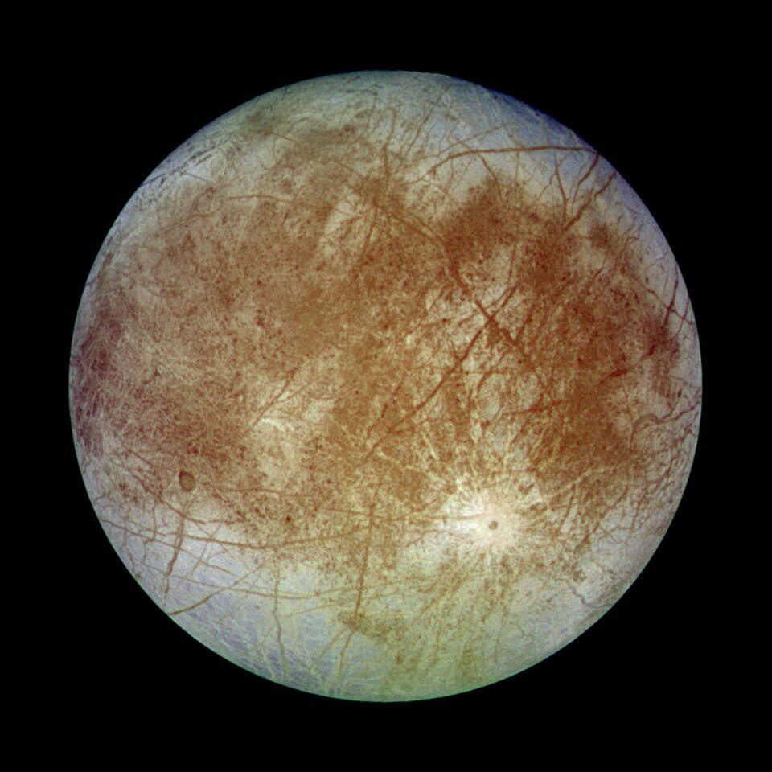
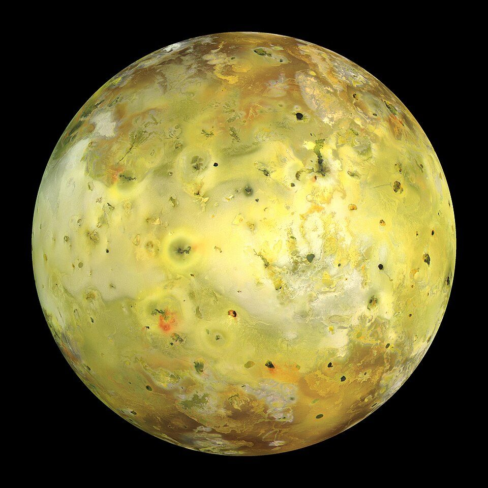
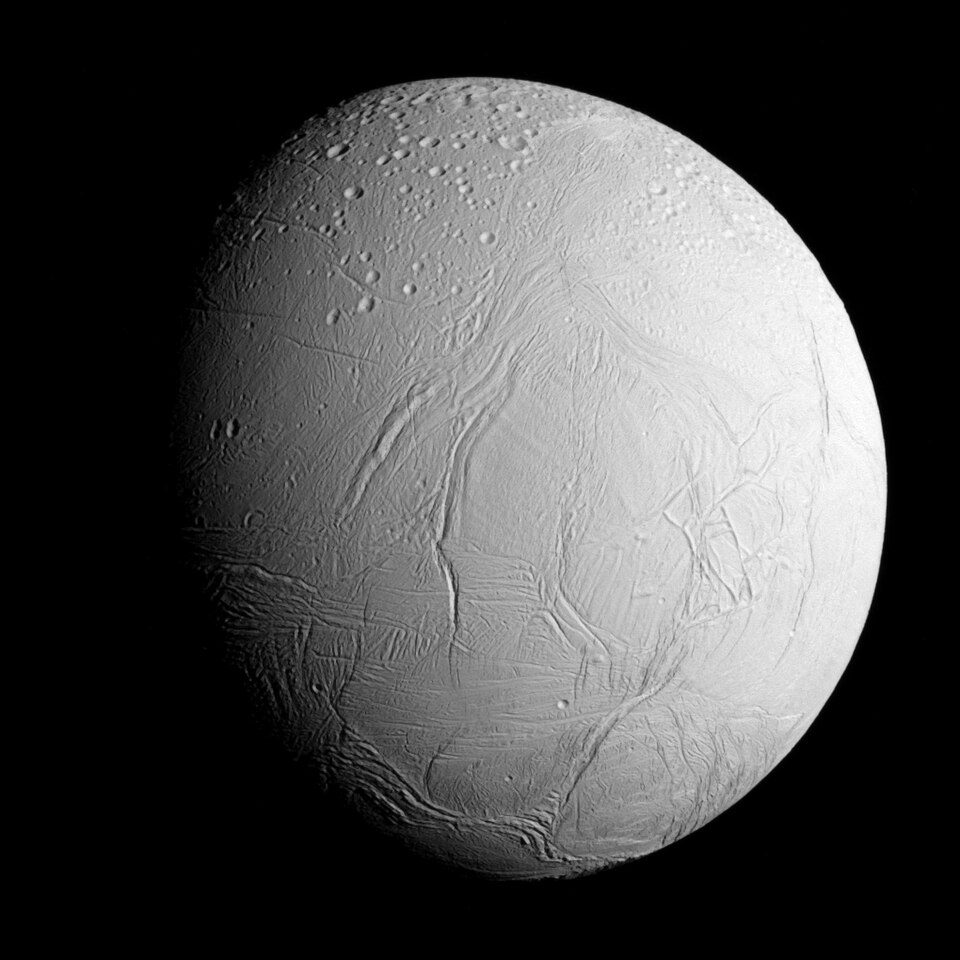

Moons of the solar system
Sulphur volcanoes, oceans hidden under ice and methane lakes: moons are some of the most astonishing worlds we know.


Around 300 moons are known to orbit the planets of the solar system, and hundreds more orbit dwarf planets and asteroids. Some are mere captured rocks a few kilometres across; others are worlds larger than Mercury, with atmospheres, volcanoes or oceans. Many scientists now think the best place to find life beyond Earth is not a planet but a moon.
Count by planet
| Planet | Confirmed moons | Largest |
|---|---|---|
| Mercury and Venus | 0 | — |
| Earth | 1 | The Moon |
| Mars | 2 | Phobos |
| Jupiter | 97 | Ganymede |
| Saturn | 274 | Titan |
| Uranus | 29 | Titania |
| Neptune | 16 | Triton |
Io: the volcano world
Io, one of Jupiter's moons, is the most volcanically active place in the solar system, with about 400 active volcanoes. The gravity of Jupiter and its neighbouring moons stretches and squeezes it constantly, and that friction heats its interior. Some eruptions hurl sulphur 500 km high. Its yellow, red and white surface is renewed so quickly that it has no craters.


Europa: an ocean under the ice
Europa is a little smaller than our Moon and covered by a crust of ice criss-crossed with cracks. Beneath it, some 15 to 25 km down, lies an ocean of salt water that could hold twice as much water as all of Earth's oceans. Water, energy and chemistry: Europa has the basic ingredients for life. The Europa Clipper probe arrives in 2030 to study it.
Ganymede and Callisto
Ganymede is the largest moon in the solar system, 5,268 km across, bigger than the planet Mercury. It is the only moon with its own magnetic field, and it also hides an ocean. Europe's JUICE mission will enter orbit around it in 2034. Callisto, its neighbour, has one of the oldest and most cratered surfaces in the solar system.
Titan: a frozen Earth
Saturn's largest moon has an atmosphere thicker than Earth's, made mostly of nitrogen. Methane rains on its surface, forming rivers, lakes and seas such as Kraken Mare, larger than the Caspian. In 2005 Europe's Huygens probe landed there. NASA is preparing Dragonfly, a drone that will hop around Titan from 2034.


Enceladus: water geysers
Only 500 km across, Enceladus has one of the whitest surfaces in the solar system. Near its south pole, cracks called "tiger stripes" eject jets of vapour and ice that feed one of Saturn's rings. The Cassini probe flew through them and found salt, silica and organic molecules, signs of an ocean in contact with hot rock.
Triton and other oddities
Triton, Neptune's large moon, orbits backwards and has nitrogen geysers. Uranus's Miranda looks assembled from pieces that do not fit. Saturn's Hyperion looks like a giant sponge. And Iapetus has one white face and one as black as coal, plus a ridge running around its equator like the seam of a walnut.
Videos to understand it better
- Moon 101 | National GeographicNational Geographic · 6.7M views
- Jupiter's Moons: Crash Course Astronomy #17CrashCourse · 1.8M views
Videos are from YouTube and belong to their creators. They only load when you click them. See all videos →